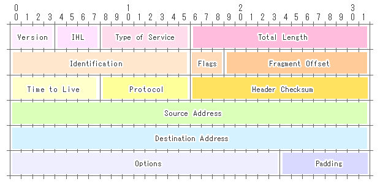
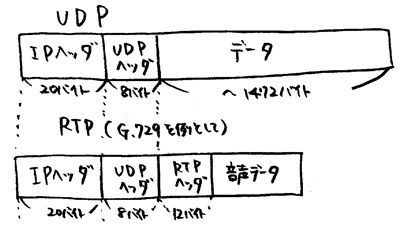

NW試験合格必勝法
N15002 和泉聡太
2017-03アジェンダ
- 必勝法
- 勉強の手法
- 出る内容
- まとめ
必勝法
ネットワークスペシャリスト試験を
楽に、そして確実に合格する方法とは？
勉強の手法
- 合格教本を買う
- ただ読んで説明を理解する
- 問題を解く
合格教本を買う
どれを買えばよいか迷ったら技術評論社
過去問集は無くても問題はない
読んで説明を理解
隅々まで単語を理解する
コラム、本の端の用語説明に注意
（歴史の教科書を読むように）
本の記載で理解できなかったら
章末問題を解いて理解度を確認する
軽く解いて覚えてなかった問題を理解しなおす
本を一周した後にもう一度解いてみる
出る内容1: 英語の略称
| 種類 | 説明 | 使用シーン |
|---|---|---|
| ARP | IPアドレスからMACアドレスを得る | ネットワーク探査 |
| Reverse ARP | MACアドレスからIPアドレスを得る | DHCPの下位互換 |
| Gratuitous ARP | IPアドレスの重複を検知 | ARPキャッシュを更新させる |
| Inverse ARP | フレームリレー環境でMACアドレスからIPアドレスを得る | MACアドレス書き換え対策版RARP |
出る内容2-1: フレーム仕様
ip(v4)
出る内容2-2: ヘッダサイズ
rtp
出る内容3: 規格名
IEEE 802.11b,a,g,n,ac
1000BASE-CX,LX,SX,T,TX,X
IEEE 802.1D,1Q,1X Auth,3ae,3af,5
まとめ
ネットワークスペシャリスト試験は
歴史の教科書と同じように学べばよい
End
Slide: reveal.js